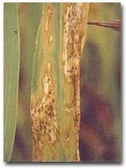
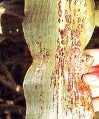
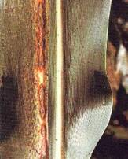
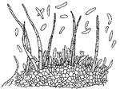

SORGHUM :: MAJOR DISEASE :: ANTHRANCNOSE AND RED ROT
Anthracnose and red rot - Colletotrichum graminicolum
Symptoms
The fungus causes both leaf spot (anthracnose) and stalk rot (red rot). The disease appears as small red coloured spots on both surfaces of the leaf. The centre of the spot is white in colour encircled by red, purple or brown margin.
|  |  |  |
Symptoms |
||
Numerous small black dots like acervuli are seen on the white surface of the lesions. Red rot can be characterized externally by the development of circular cankers, particularly in the inflorescence. Infected stem when split open shows discoloration, which may be continuous over a large area or more generally discontinuous giving the stem a marbeled appearance.
Pathogen
The mycelium of the fungus is localised in the spot. Acervuli with setae arise through epidermis. Conidia are hyaline, single celled, vacuolate and falcate in shape.
|  |
Favourable Conditions
- Continuous rain.
- Temperature of 28-30˚C.
- High humidity.
Disease cycle
The disease spread by means of seed-borne and air-borne conidia and also through the infected plant debris.
Management
- Treat the seeds with Captan or Thiram at 4 g/kg.
- Spray the crop with Mancozeb 2 kg/ha.